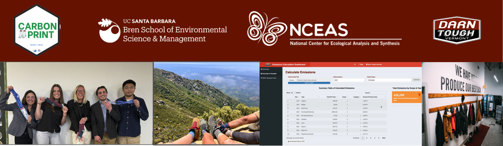
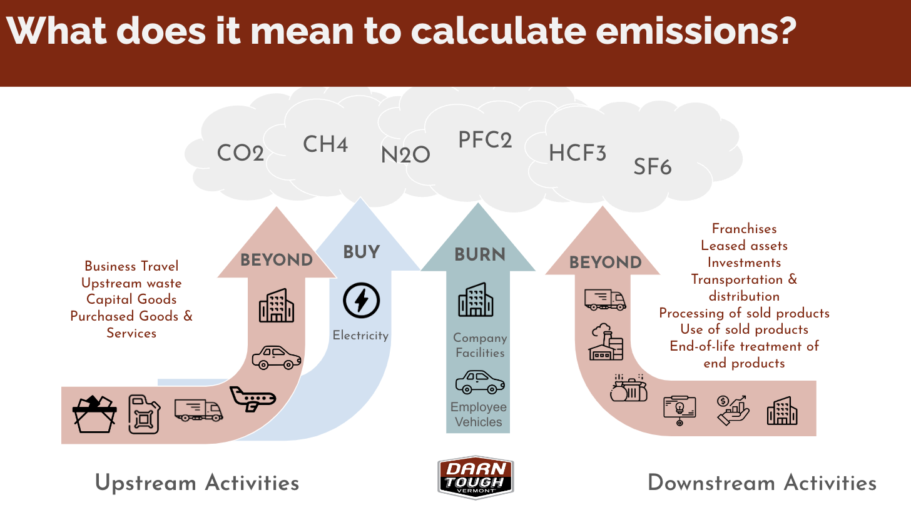
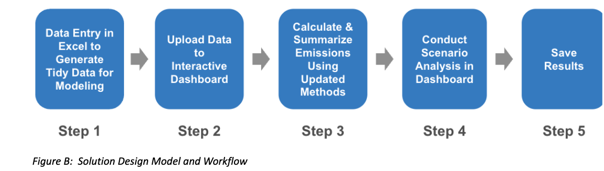
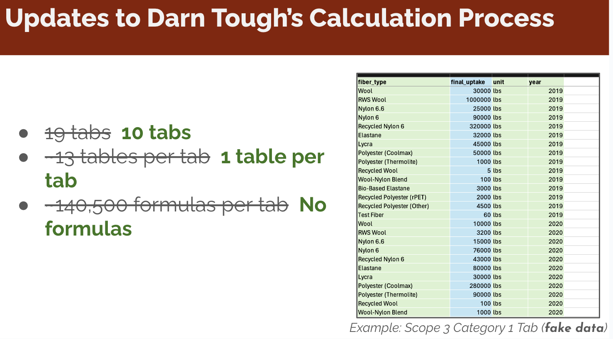
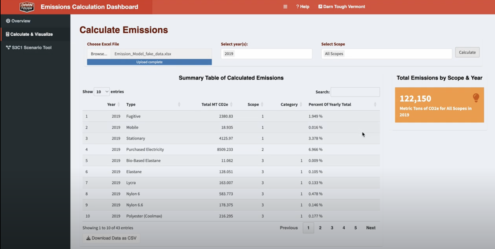
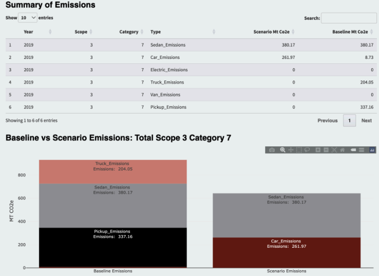

Creating a Reproducible Emissions Model for a Sock Manufacturer
With corporate sustainability growing ever more important, recent US, EU, and California legislation now mandates that public organizations disclose their greenhouse gas emissions and climate-related risks. Beyond these political pressures, social expectations are also driving organizations to adopt more sustainable practices and ensure transparency around their emissions. For Darn Tough, a brand committed to sustainability, these evolving standards present both a challenge and an opportunity.
About Darn Tough
Our team’s client, Darn Tough, is a Vermont-based outdoor sock company that is serious about prioritizing sustainability and creating long-lasting products. Known for their lifetime warranty, Darn Tough offers customers a free new pair of socks for shipping back a worn-out pair, which gets recycled into blankets for the U.S. military. While this lifetime warranty is the company’s landmark sustainability initiative, they are increasingly concerned about their carbon footprint, as Darn Tough strives to align its operations with the 2030 target set by its largest retailer, REI. Specifically, this target is to achieve a 55% reduction in total GHG emissions from a 2019 baseline level by 2030. Reaching the 2030 target will require Darn Tough to develop effective ways to model their emissions, so they can best understand the critical points in their supply chain that are responsible for the most emissions, in addition to points where emissions can be most easily reduced.
Understanding Greenhouse Gas Emissions
Calculating an organization’s carbon footprint is a multifaceted endeavor, requiring a meticulous evaluation of every step in the product lifecycle, from raw material sourcing to manufacturing, distribution, and even post-consumer handling. Darn Tough follows the Greenhouse Gas (GHG) Protocol which categorizes emissions into three distinct scopes:
* Scope 1 (Burn): Direct emissions from sources owned or controlled by the company
* Scope 2 (Buy): Indirect emissions from purchased energy
* Scope 3 (Beyond): All other indirect emissions, including upstream and downstream activities
For Darn Tough, this involves accounting for emissions at every stage of their sock production, from manufacturing fibers, shipping products, to recycling worn-out socks through their warranty program.

The Challenge
Darn Tough, renowned for producing durable socks for the outdoor apparel industry, utilizes a blend of merino wool and synthetic materials. Their partnership with REI (Recreational Equipment, Inc.), which has set an ambitious target to reduce emissions by 55% from 2019 levels by 2030, underscores the urgency to refine their greenhouse gas emissions calculations. However, Darn Tough’s current method, which primarily uses Excel, is reliant on manual, non-reproducible calculations in Excel and poses challenges for the team, underscoring the need for a more streamlined and accurate solution.
Our Approach
To meet these challenges head-on, we defined three major objectives and variables:
1. **Utilize Accurate Methodology:** Address discrepancies and errors in the existing emissions calculations by updating and standardizing the methodology.
2. **Streamline the Calculation Process:** Develop a reproducible, efficient method to replace the complex and unwieldy Excel-based process.
3. **Conduct Scenario Analysis:** Create tools that allow for scenario planning and data-driven decision-making to reduce emissions effectively.

Delivering Solutions
Updated Methodology
Our first task was to refine Darn Tough’s calculation methodology. We conducted extensive research and improved calculations, ensuring alignment with industry standards and the Greenhouse Gas (GHG) Protocol, including using the latest emission factors. Along the way, we ensured all updates were thoroughly documented. This update not only improved accuracy but also provided a robust foundation for future calculations.
Reproducible Model
Next, we tackled the complexity of Darn Tough’s existing model.
Darn Tough’s original method used a complex Excel sheet to model their emissions. This approach was time consuming, resource intensive, and difficult to replicate yearly.
By automating the emissions calculations using the R programming language, we created a reproducible and accurate approach.
Our streamlined solution involved creating a simplified Excel input template with tidy, formula-free tables and automating calculations with R. This new model takes inventory data as inputs and produces precise emissions totals, eliminating the potential for manual errors and significantly simplifying the process.

Emissions Calculator Application
To make these improvements user-friendly, we developed an emissions calculator application using Shiny. This app allows users to upload their data, select scopes, and calculate emissions effortlessly. It also provides downloadable outputs and interactive visualizations, making it easier to understand and manage carbon emissions.
The new Emissions Calculator Dashboard makes it easier for Darn Tough to calculate their emissions. Users can upload data, select specific scopes, calculate emissions, and generate downloadable outputs and interactive visualizations all in one centralized interface.

Screenshot of the dashboard with fake data.
Scenario Analysis Tool
Beyond calculating emissions, our scenario analysis tool helps Darn Tough identify practical ways to reduce their carbon footprint. Users can input hypothetical changes, such as switching to recycled wool, and compare the impact on emissions against a baseline year. This feature provides actionable insights for making informed, effective decisions on emission reductions.

Screenshot of the scenario analysis tool with fake data.
Moving Forward
With the Carbon Emission Calculation Dashboard, Darn Tough is now equipped to calculate, visualize, and reduce their carbon emissions more efficiently. This streamlined process not only saves time but also allows the company to focus on broader sustainability initiatives. As Darn Tough continues to innovate and improve, we are confident that, with the help of our emission calculation dashboard, they are on track to reaching their reductions targets.
My experience
This project was a unique opportunity to work with a real-world client and apply data science skills to a sustainability challenge. I learned so much about carbon accounting, building interactive dashboards, and the strengths of both Excel and R within a carbon accounting framework. I am grateful for the opportunity to contribute to Darn Tough’s sustainability efforts and I look forward to seeing how Darn Tough uses these tools to reduce their emissions and continue their commitment to sustainability. From co writing the proposal for this project to seeing it through to the finished project, I am so proud of the final product that our team achieved.
Acknowledgments
We extend our deepest gratitude to Kristen Graf from Darn Tough, Dr. Enze Jin, Dr. Carmen Galaz Garcia, the MEDS Capstone Committee, and our entire MEDS cohort for their invaluable support and feedback throughout this project.